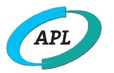
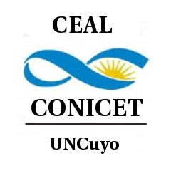
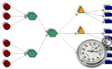
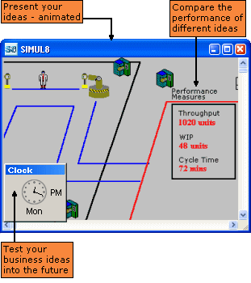

|
|
|
|
Bienvenido al Centro de
Estudios y Aplicaciones Logísticas (CEAL)
|
 |
CEAL
es un Centro de Investigación,
Desarrollo e Innovación (I+D+I),
vinculado con la Facultad de
Ingeniería de la Universidad Nacional de
Cuyo (UNCuyo) en Mendoza, Argentina.
Este
centro de I+D fue creado para satisfacer la necesidad
de consultoría profesional altamente
calificada, y para |
|
desarrollar investigación
y desarrollo académico en la región
oeste de Argentina,
con especial énfasis en la aplicación de
tecnología en dominios
industriales.
Las
actividades del CEAL están enfocadas en el dominio de la Logística,
la
Administración de la Cadena de
Abastecimiento (Supply
Chain
Management), y la Optimización
y la Administración
Industrial.
Todos los proyectos desarrollados
en el CEAL siguen un enfoque
multidisciplinar, haciendo énfasis en el desarrollo y
transferencia de tecnología.
|

|
|
|
El
CEAL está además comprometido con la
formación de recursos
humanos,
mediante una estrecha relación con la Maestría
en
Logística y con la
carrera de Ingeniería Industrial de la Facultad de
Ingeniería de la
UNCuyo. |
|
| | |
|

|
Asociación de Profesionales en Logistica
Esta asociacion tiene como mision colaborar e intercambiar experiencias con otras organizaciones que tengan interes en difundir o mejorar las practicas logisticas en la region (incluido el mercosur)
Actividades y grupos en los que participamos: Difusión de la Logística en segmentos de la actividad económica y empresas, intercambio de conocimiento, programas educativos y de transferencias de conocimientos científicos y tecnológicos, Realizar Exposiciones, Seminarios, Congresos, Foros de discusión, Diplomados, Cursos de Capacitación, de distintas disciplinas que forman parte de la logística, Participar en Congresos Nacionales e Internacionales; Asesoramiento, Auditorías, Dictámenes en Instituciones Públicas ó Privadas.
|
|
|
|
|
|
|
|
|
 |
|
|
|

Lugar de Trabajo de Investigadores
del CONICET
|
6º
International Conference on Food and Wine Supply Chain
Bologan Italia 2021 :
Wine Supply Chain Council. Del 8 al 11 de Junio. 2021 (Evento Hibrido)
Más
información
|

Medición de
Performance Logística y Benchmarking.
Cursos de capacitación in-company y consultoría.
Más
información
|

APS y Optimizacion Logistica.
Modelado y Simulacion de la Cadena de Suministros.
Más
información
|
Pronosticos para planeacion de mision critica.
Gestion de flotas en contingencias climaticas Mitigacion gestion de catastrofes.
Más
información |
|
|
|
|
|
|